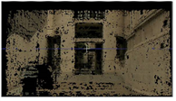

Dense point clouds are a useful starting point for 3D modeling and can be helpful in positioning 3D objects into a scene. Using the PointCloudGenerator node, you can create a dense point cloud based on the information generated by CameraTracker and use the points to create a 3D mesh of your 2D footage.
Here's a quick overview of the workflow:
| 1. | Make sure your PointCloudGenerator node is connected to the appropriate footage and Camera node. For more information, see Connecting the PointCloudGenerator Node. |
| 2. | Set keyframes in the footage to determine which frames are tracked to create the point cloud. For more information, see Setting Keyframes in a Sequence. |
| 3. | Track the footage to create a dense point cloud. For more information, see Tracking a Dense Point Cloud. |
|
|
 |
| A 2D source image. | The resulting 3D point cloud. |
| 4. | Filter points from the result to adjust it and eliminate bad points. For more information, see Filtering Your Point Cloud. |
| 5. | Create groups within the cloud to aid visualization or bake out grouped sections. For more information, see Grouping, Labeling, and Baking Points. |
| 6. | Then if you need to, you can move on to creating meshes. For more information, see Creating a Mesh from a Point Cloud. |
| 7. | Alternatively, use the PoissonMesh node to create a mesh. For more information, see Using the PoissonMesh Node. |
|
|